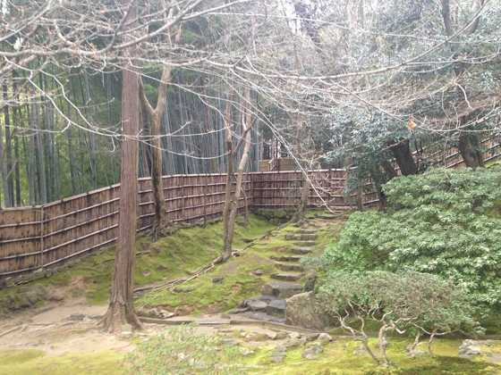
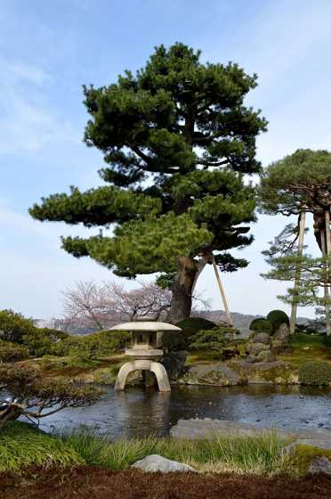
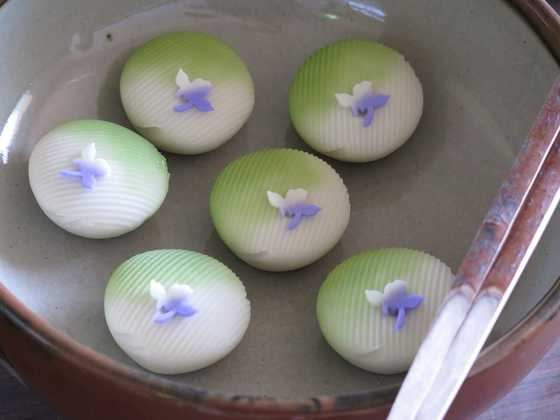
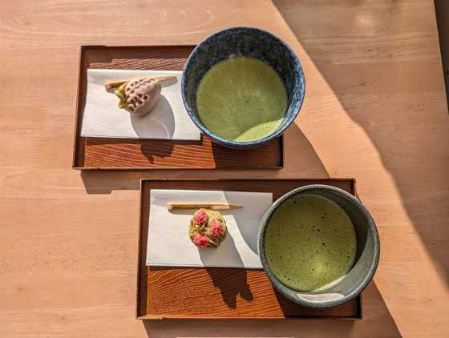
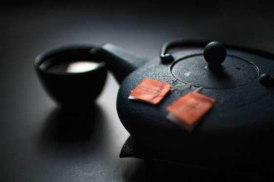
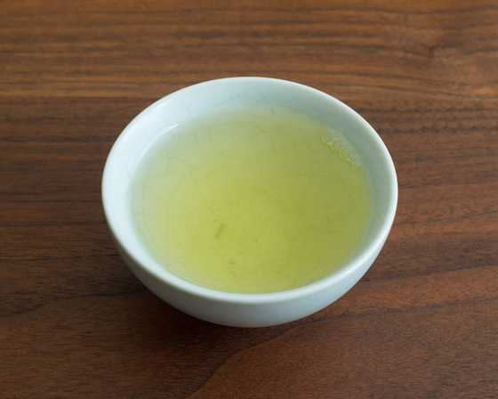
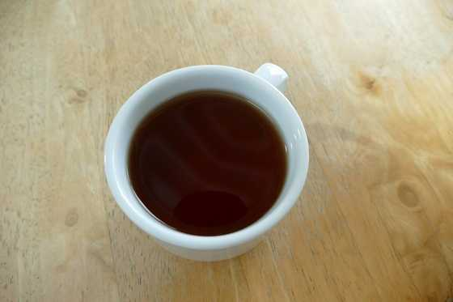
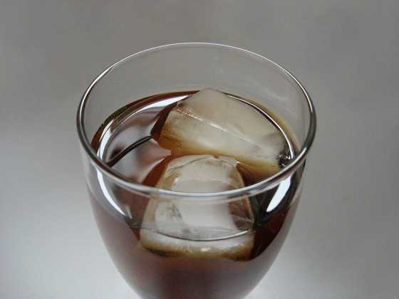
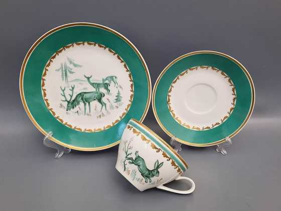
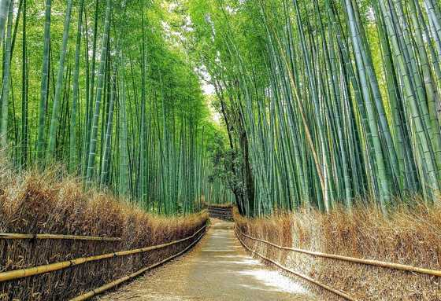

福井県小浜市・三丁町
迷路のような旧料亭の一角で、
まったり、ゆっくり。
ナガタカフェは、重要伝統的建造物群保存地区・三丁町にある旧料亭の一部を使ったカフェです。
お店の由来と想い
昭和レトロな建物で、ひと息つく。
お店のInstagramによると、ナガタカフェは三丁町にある旧料亭の一部を使ったカフェで、「昭和レトロで迷路のような建物の中で、まったりゆっくりお過ごしください」と案内されています。三丁町は古い町家が残る、重要伝統的建造物群保存地区です。紹介記事では、趣のある外観とどこか懐かしい内装の古民家カフェとされ、部屋数が多く、個室も利用できると紹介されています。
情報源: Instagram/ふくいドットコム(紹介記事)。以上の事実以外の言い回しは制作側の表現です。


メニュー
ランチと、甘いものと、お茶の時間。
紹介記事では、次のような内容が案内されています。価格・営業時間・定休日は情報源により異なるため、掲載せず「準備中」としています。
事前の予約がおすすめと紹介されています。最新の情報はInstagramをご確認ください。









口コミ
こんなふうに過ごせたら(イメージ例)
以下は制作側が作成した創作の例で、実在のお客様の声ではありません。
イメージ例
古い建物の廊下を進むだけで少しわくわくしました。お部屋でゆっくりランチができたら嬉しいです。
イメージ例
だし巻き玉子のセットで、お昼にほっとひと息。町歩きの途中に寄りたくなるお店です。
イメージ例
食後のデザートとお茶を、昭和の雰囲気のなかで。ついつい長居してしまいそうです。
アクセス
三丁町のすぐそば
| 所在地 | 〒917-0058 福井県小浜市小浜香取 14 三丁町ながた |
|---|---|
| 電話 | 準備中 |
| 営業時間 | 準備中 |
| 定休日 | 準備中 |
| @nagatacafe |
営業時間・定休日は情報源により異なるため掲載していません。お出かけ前にInstagram等でご確認ください。